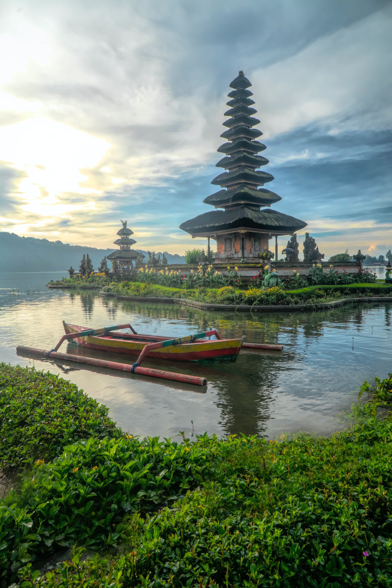
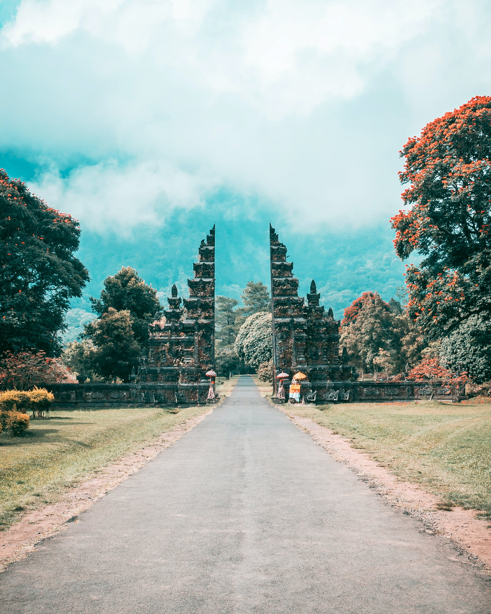

Lazy coconut trees, long sand beaches, crystalline blue waters, lush rainforests, sleepy volcanoes, vibrant green rice terraces, fiery orange sunsets, lively monkeys, and flitting colorful birds — yes, Bali is a quintessential tropical paradise. But the true beauty of Bali lies in the culture, the people, and the arts that permeate every facet of this magical island. Bali, predominantly Hindu, seems to live and breathe in it's strong belief system. Balinese Hinduism and village life creates a close-knit community of people that support each other in the various rituals, festivals and ceremonies. They worship the traditional Hindu gods of Shiva, Vishnu and Brahma, a trinity of the supreme being, Sanghyang Widhi. But Balinese Hindus also honor the supreme spirit manifested in all elements of nature and animals. There is an overall intention to achieve balance and harmony between humans and gods and nature. It is a sacred relationship that is protected and cherished throughout daily life. For instance, Balinese put out offerings — sometimes two or three times a day — of flowers, rice, fruit and incense. It is a way of giving back to the gods for what they have given you. It is also a way of keeping demons at bay. Offerings can be seen everywhere in Bali at their many temples and even on the sidewalk outside shops and restaurants. Be careful not to step on them.

